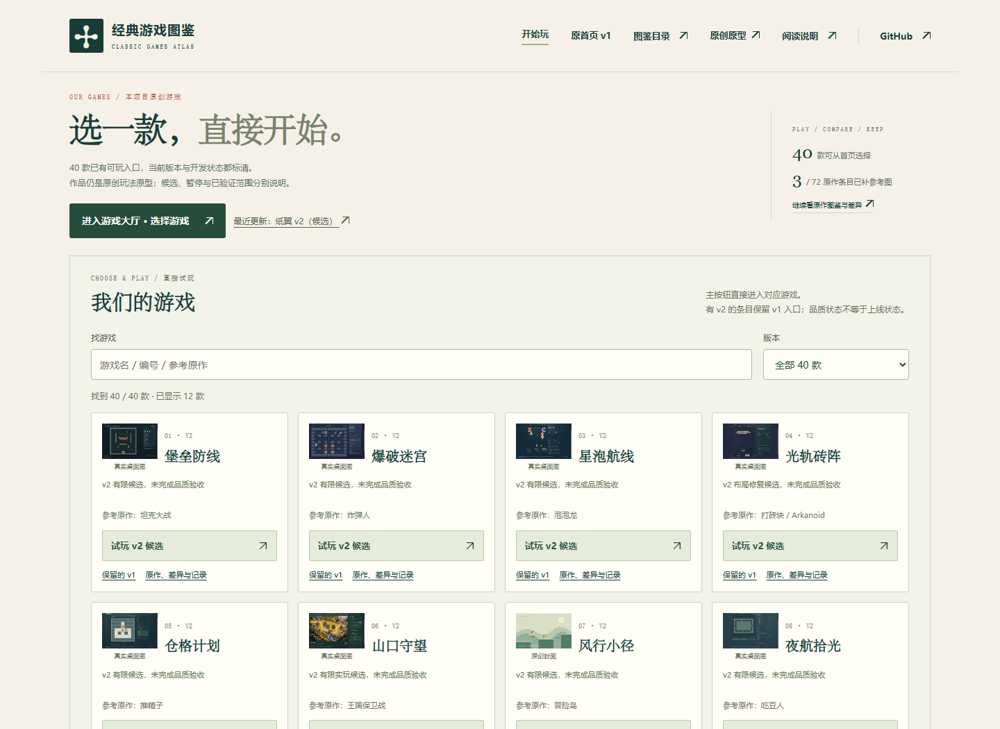
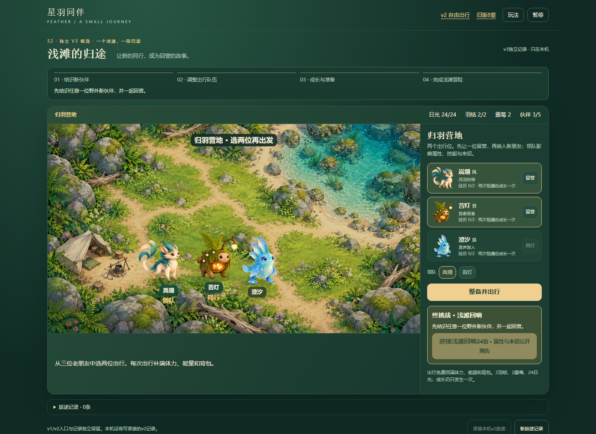
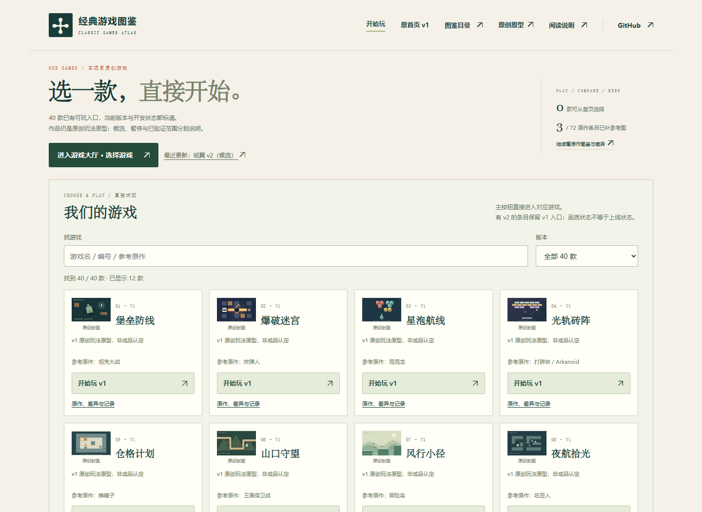
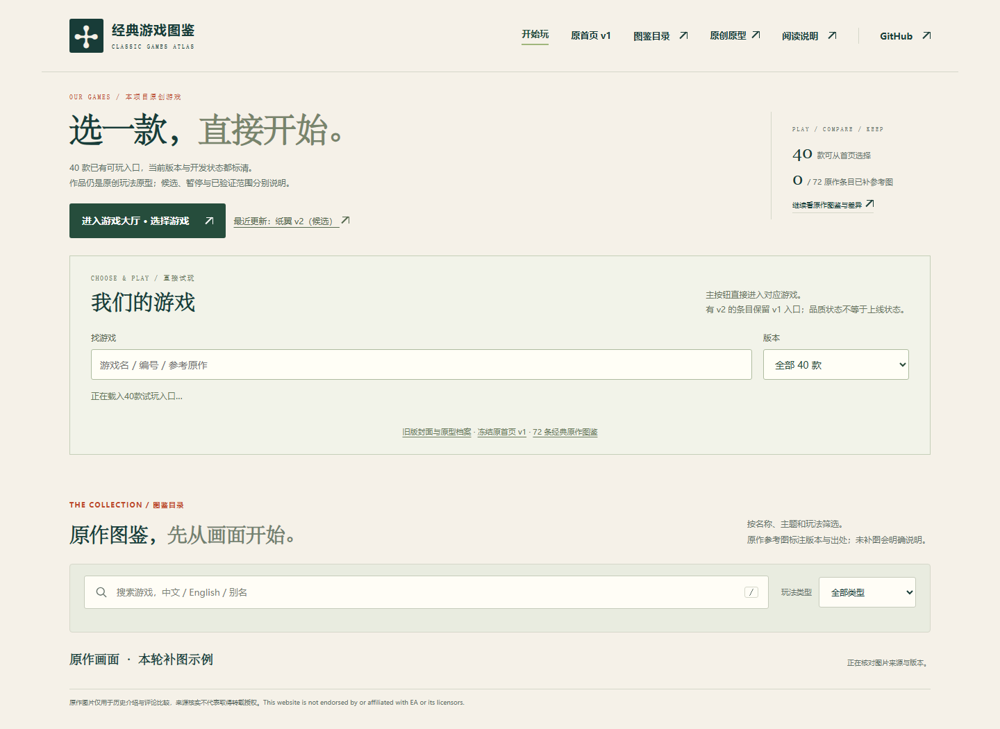
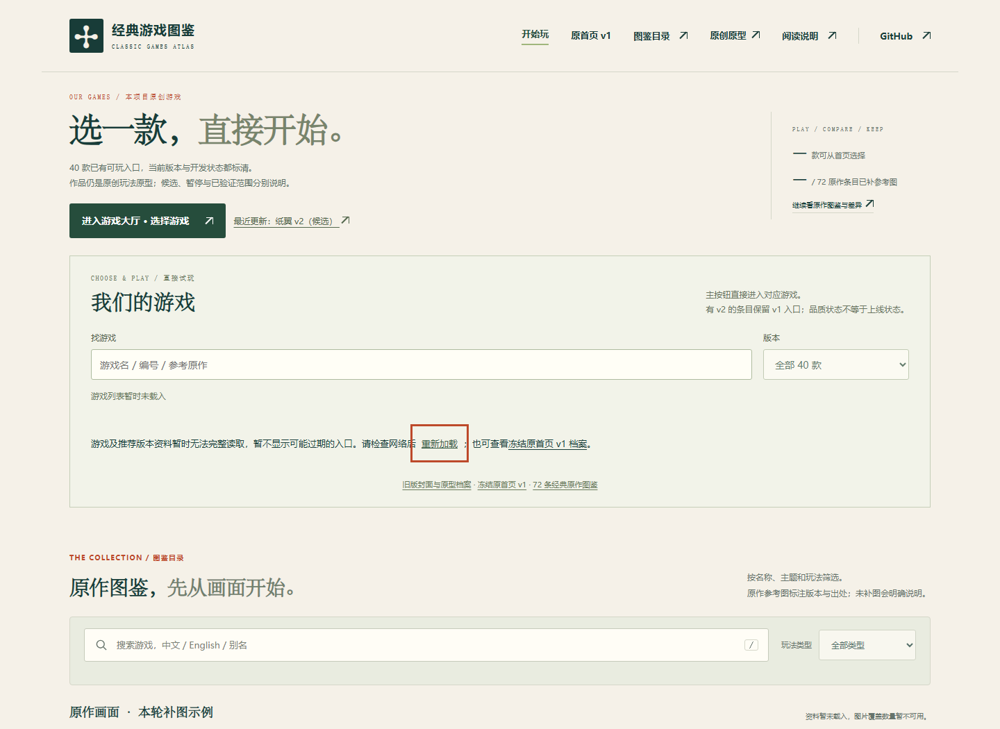
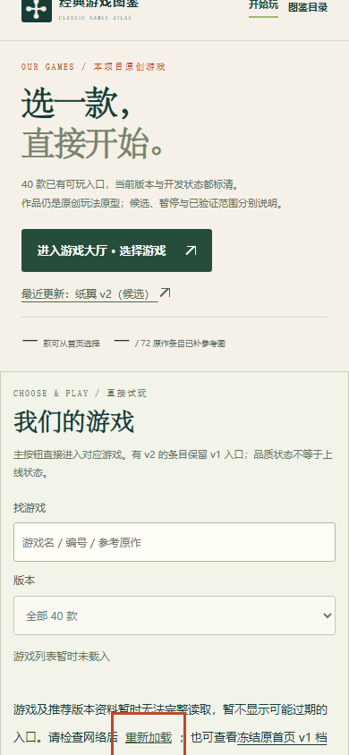
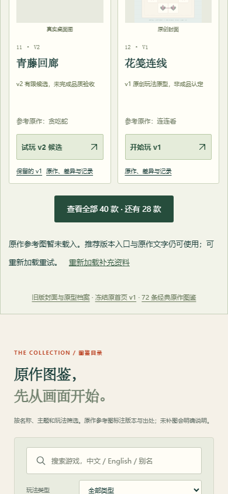
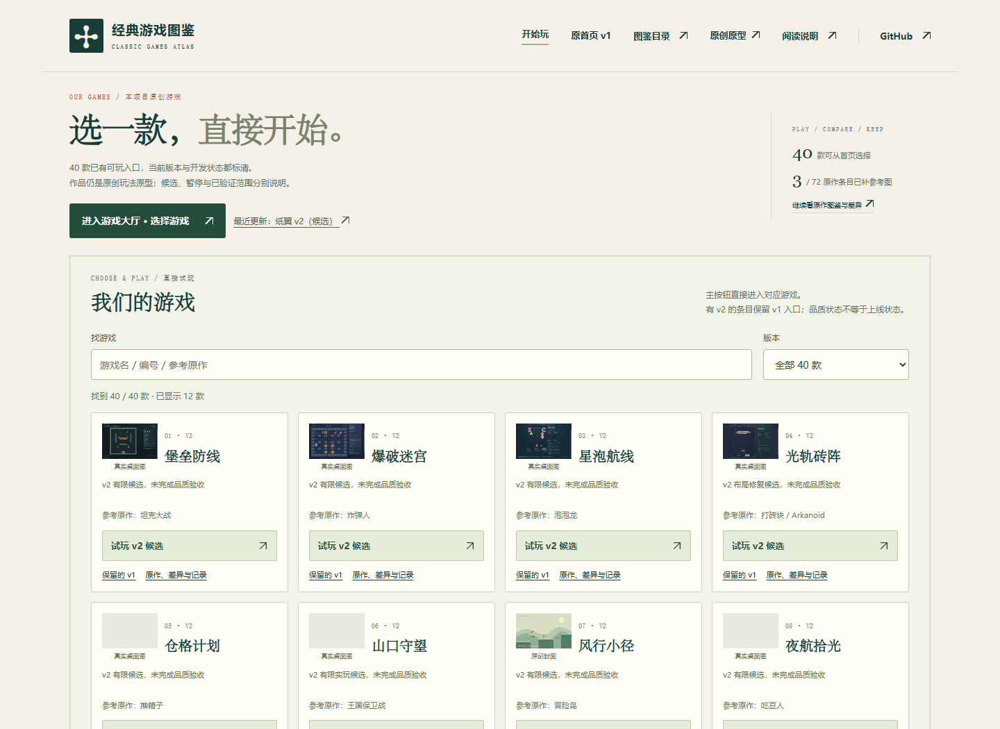

两项首页修复：推荐版本资料失败不再悄悄退回旧入口；补充资料挂起不会无限拖住大厅。只改首页加载处理，不改游戏、字体或40项目录。
截图先于修改。基线为b2e735d；故障由浏览器隔离拦截明确制造，不能当作真实设备网络故障。1440桌面与390CSS模拟均使用桌面硬件，非真机性能测试。
游戏启动/搜索/详情/返回的正常UI与资源故障注入分列；未测试全36款、整份JS/CSS失败、真实手机弱网、手感或声音。
完整说明及未测边界 · 基线普通网络 · 基线版本故障 · 基线补充挂起 · 本地9场景原始记录 · 单元结果 · 单元源码 · 浏览器复现脚本 · 基线采样脚本







